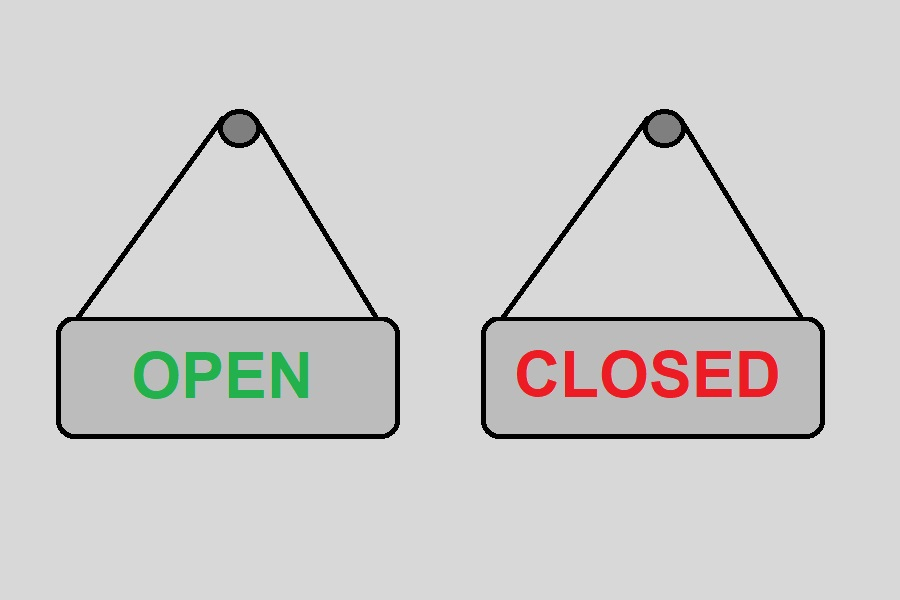
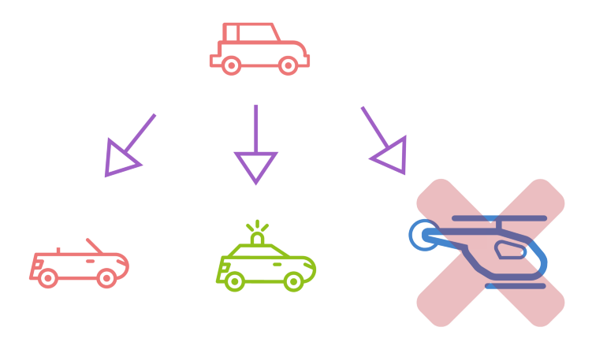
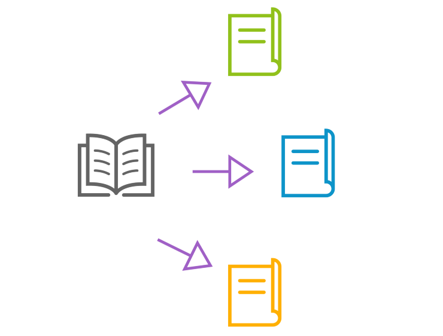
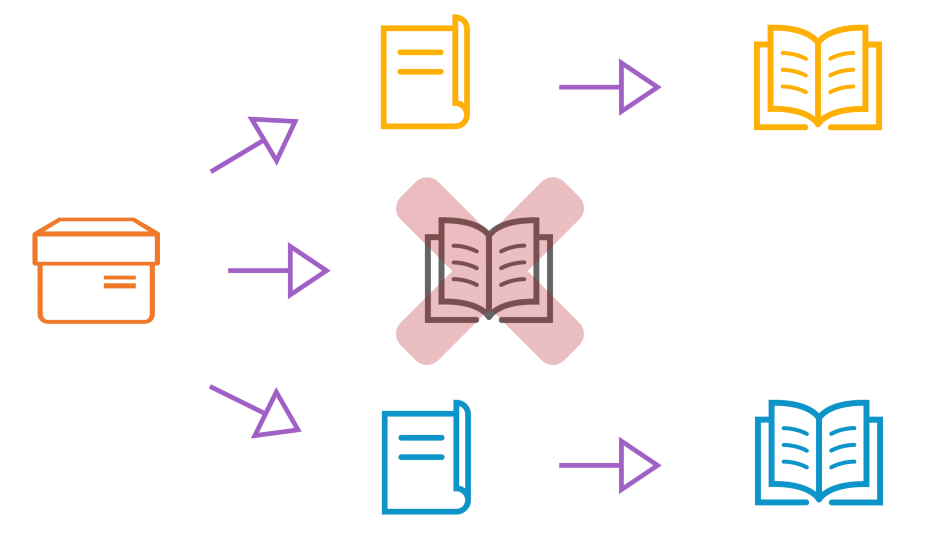

Programming principles
Who is programmer?


Comparison of Coding and Programming
| Definition | Translation of natural language into machine commands through an intermediary coding language | The process of development of fully functioning software solution |
| Skills | As a coder, you need to know the syntax of the programming language | As a programmer, you need high-level thinking and analytical skills apart from coding skills. |
| Tools | A text editor would suffice | Analysis tools, modeling programs, code generators, testing frameworks |
| Outcome | Simple solution or a small part of a project | Full ready-to-use application |

KISS
keep it short and simple

DRY
don’t repeat yourself

YAGNI
You Aren’t Gonna Need It

Single Responsibility Principle
Open/Closed Principle

Liskov’s Substitution Principle

Interface Segregation Principle

Dependency Inversion Principle

Refactor Principle